read_GofPerParticle, plot_GofPerParticle
ReadPlot_GofPerParticle.RdThis function reads/plots the parameter values of each particle and the objective function against the iteration number
Usage
read_GofPerParticle(file="Particles_GofPerIter.txt", na.strings="NA",
plot=TRUE, ptype=c("one", "many"), nrows="auto", main=NULL,
xlab="Number of Iterations", cex=0.4, cex.main=1.5, cex.axis=1.7,
cex.lab=1.5, col, lty=3, ylim, verbose=TRUE, do.png=FALSE,
png.width=1500, png.height=900, png.res=90,
png.fname="Particles_GofPerIter.png")
plot_GofPerParticle(x, ptype=c("one", "many"), nrows="auto", main=NULL,
xlab="Number of Iterations", cex=0.4, cex.main=1.5, cex.axis=1.7,
cex.lab=1.5, col=rainbow(ncol(x)), lty=3, ylim=NULL, verbose=TRUE, ...,
do.png=FALSE, png.width=1500, png.height=900, png.res=90,
png.fname="Particles_GofPerIter.png")Arguments
- file
character, name (including path) of the file to be read
- na.strings
character vector, strings which are to be interpreted as
NAvalues. Seeread.table- plot
logical, indicates if a plot with the convergence measures has to be produced
- x
data.frame with the goodness-of-fit measure of each particle per iteration.
The number of columns inxhas to be equal to the number of particles, whereas the number of rows inxhas to be equal to the number of iterations
( (ncol(x)= number of particles ;nrow(x)= number of iterations)- ptype
character, representing the type of plot. Valid values are: in c("one", "many"), for plotting all the particles in the same figure or in one windows per particle, respectively.
- nrows
OPTIONAL. Only used when
plot=TRUE
numeric, number of rows to be used in the plotting window
Ifnrowsis set to auto, the number of rows is automatically computed depending on the number of columns ofx- main
OPTIONAL. Only used when
plot=TRUE
character, title for the plot- xlab
OPTIONAL. Only used when
plot=TRUE
character, label for the 'x' axis- cex
OPTIONAL. Only used when
plot=TRUE
numeric, values controlling the size of text and points with respect to the default- cex.main
OPTIONAL. Only used when
plot=TRUE
numeric, magnification for main titles relative to the current setting ofcex- cex.axis
OPTIONAL. Only used when
plot=TRUE
numeric, magnification for axis annotation relative to the current setting ofcex- cex.lab
OPTIONAL. Only used when
plot=TRUE
numeric, magnification for x and y labels relative to the current setting ofcex- col
OPTIONAL. Only used when
plot=TRUE
character, colour to be used for drawing the lines- lty
OPTIONAL. Only used when
plot=TRUE
numeric, line type to be used- ylim
numeric with the the ‘y’ limits of the plot
- verbose
logical, if TRUE, progress messages are printed
- ...
OPTIONAL. Only used when
plot=TRUE
further arguments passed to the plot command or from other methods- do.png
logical, indicates if all the figures have to be saved into PNG files instead of the screen device
- png.width
OPTIONAL. Only used when
do.png=TRUE
numeric, width of the PNG device. Seepng- png.height
OPTIONAL. Only used when
do.png=TRUE
numeric, height of the PNG device. Seepng- png.res
OPTIONAL. Only used when
do.png=TRUE
numeric, nominal resolution in ppi which will be recorded in the PNG file, if a positive integer of the device. Seepng- png.fname
OPTIONAL. Only used when
do.png=TRUE
character, filename used to store the PNG file wih the dotty plots of the parameter values
Value
A data frame with the contents of the output file ‘Particles_GofPerIter.txt’ output file, where each column represents an individual model parameter and its corresponding GoF, and each row represents a different PSO iteration.
Additionally, when plot=TRUE a multi-panel figure is produced by a call to the plot_GofPerParticle function, where each panel corresponds to a different model parameter and shows the the iteration number against the corresponging GoF value for each iteration.
Author
Mauricio Zambrano-Bigiarini, mzb.devel@gmail.com
Examples
# \donttest{
local({
# Setting the user temporal directory as working directory
oldwd <- getwd()
on.exit(setwd(oldwd), add = TRUE)
setwd(tempdir())
# Number of dimensions to be optimised
D <- 4
# Boundaries of the search space (Sphere test function)
lower <- rep(-100, D)
upper <- rep(100, D)
# Setting the seed
set.seed(100)
# Runing PSO with the 'Sphere' test function, writting the results to text files
hydroPSO(fn=sphere, lower=lower, upper=upper,
control=list(maxit=100, write2disk=TRUE, plot=TRUE) )
# Reading the convergence measures got by running hydroPSO,
# with all the particles in the same window (ptype="one", by default)
particles1 <- read_GofPerParticle(file="./PSO.out/Particles_GofPerIter.txt")
# Reading the convergence measures got by running hydroPSO,
# with each particle in a different pannel
particles2 <- read_GofPerParticle(file="./PSO.out/Particles_GofPerIter.txt", ptype="many")
# Reading the convergence measures got by running hydroPSO,
# with each particle in a different pannel of the output PNG figure
particles3 <- read_GofPerParticle(file="./PSO.out/Particles_GofPerIter.txt",
ptype="many", do.png = TRUE, png.width = 2200,
png.height = 1600, png.res = 150)
}) # local END
#>
#> ================================================================================
#> [ Initialising ... ]
#> ================================================================================
#>
#> [npart=40 ; maxit=100 ; method=spso2011 ; topology=random ; boundary.wall=absorbing2011]
#>
#> [ user-definitions in control: maxit=100 ; write2disk=TRUE ; plot=TRUE ]
#>
#>
#> [ Output directory 'PSO.out' was created on: '/tmp/RtmpKRR2rt' ]
#>
#>
#> ================================================================================
#> [ Writing the 'PSO_logfile.txt' file ... ]
#> ================================================================================
#>
#> ================================================================================
#> [ Running PSO ... ]
#> ================================================================================
#>


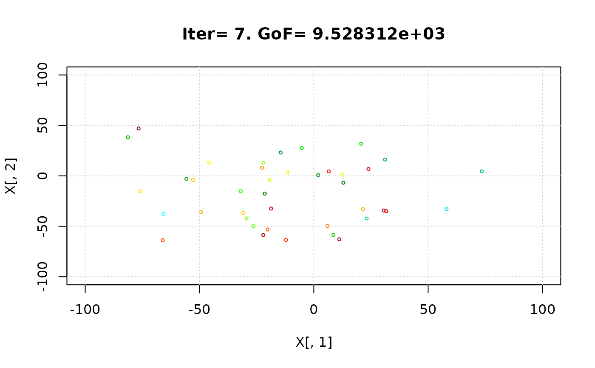


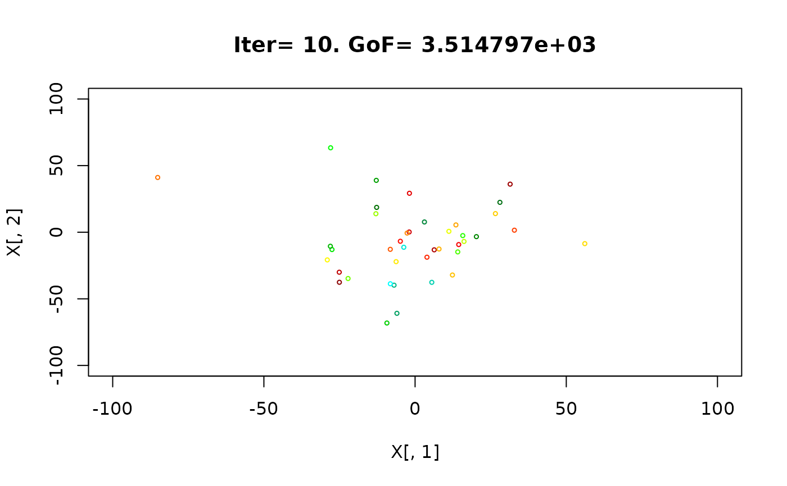

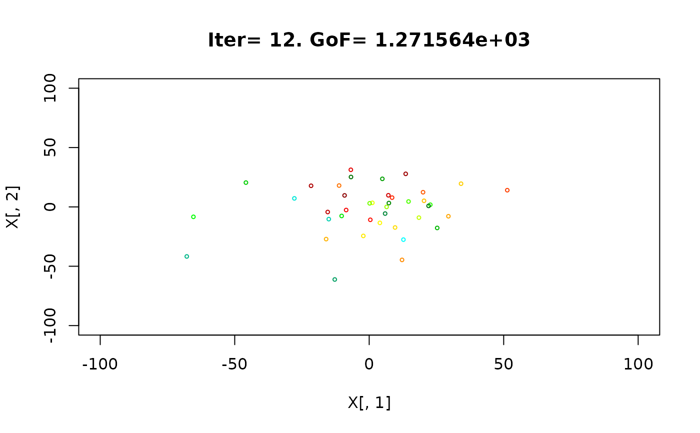


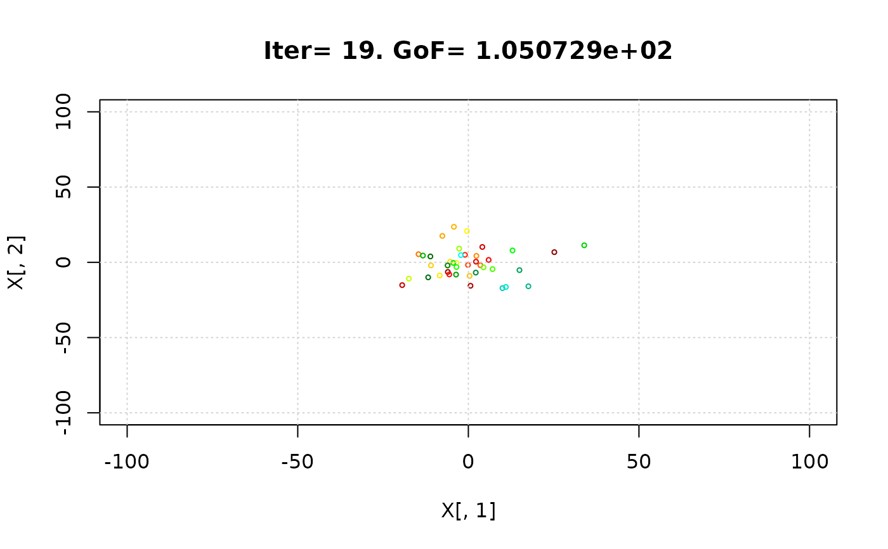


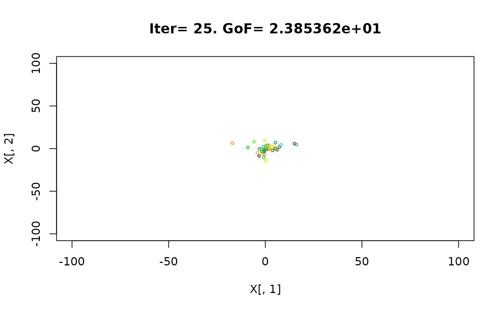

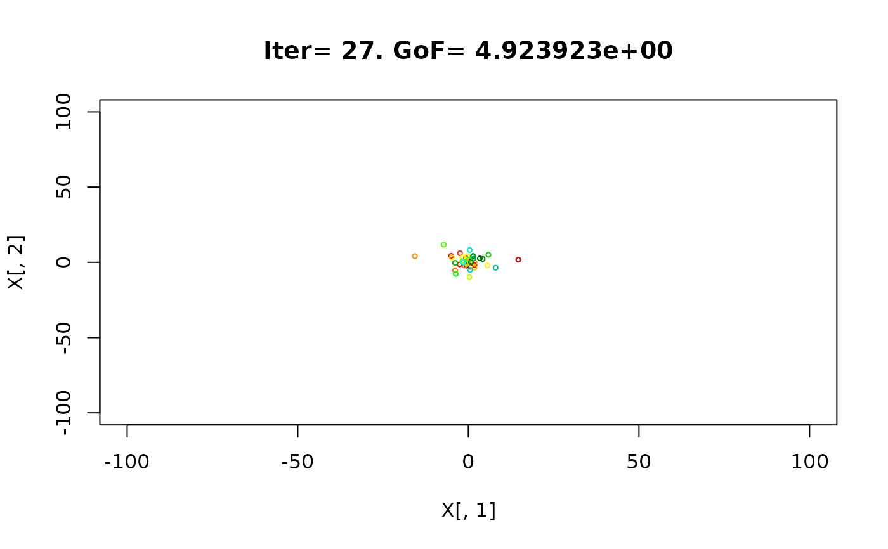


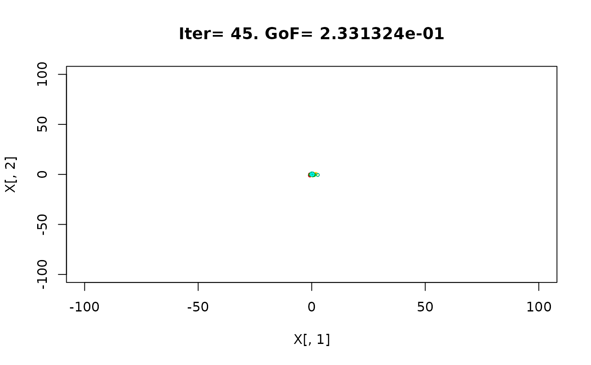
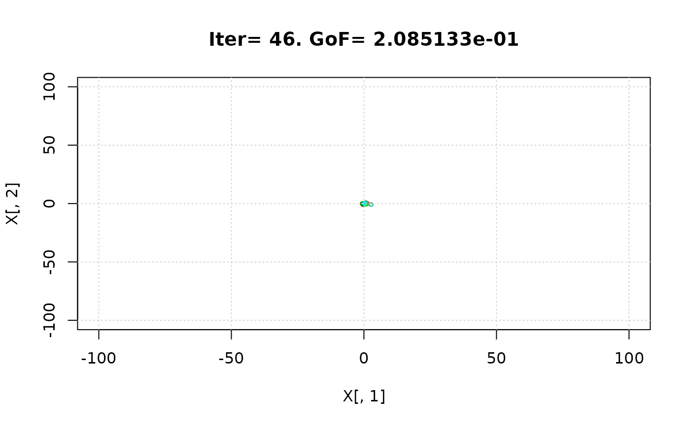


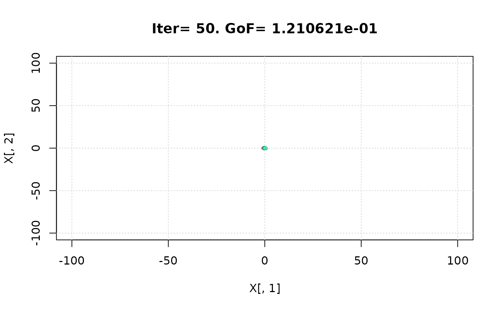

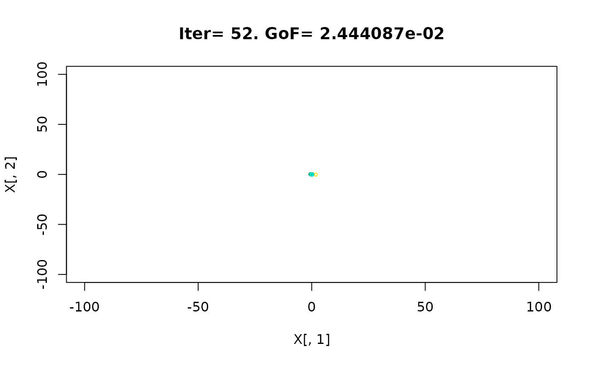


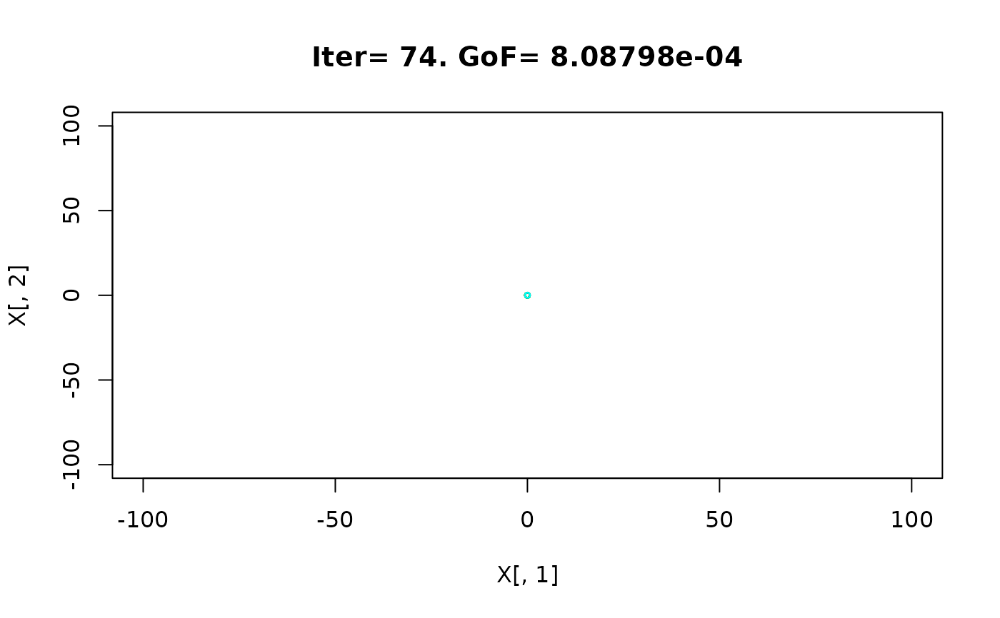


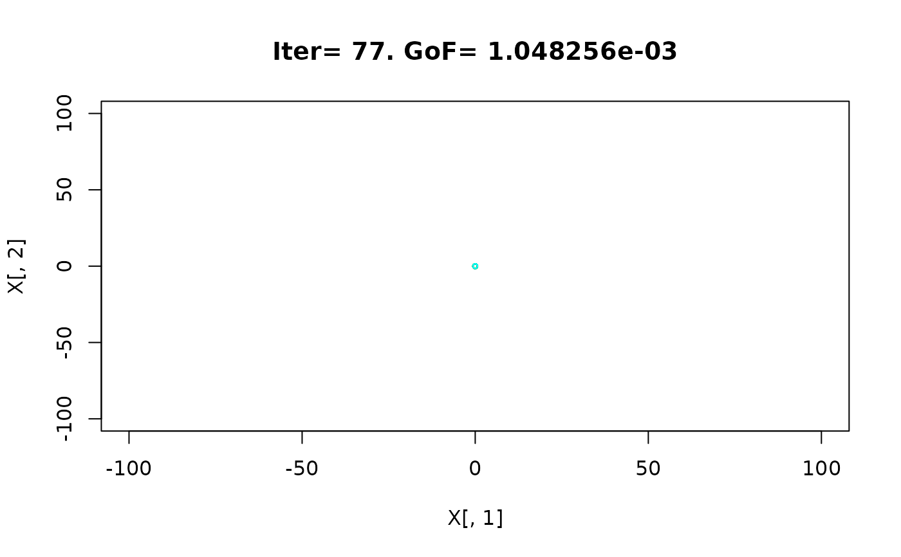


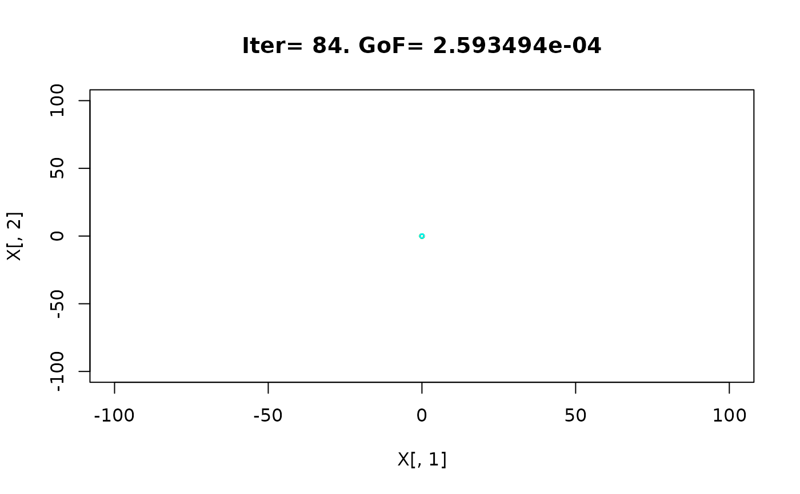


 #> iter:100 Gbest: 6.143E-08 Gbest_rate: 66.13% Iter_best_fit: 6.143E-08 nSwarm_Radius: 3.14E-06 |g-mean(p)|/mean(p): 98.08%
#>
#> [ Writing output files... ]
#>
#> |
#> ================================================================================
#> [ Creating the R output ... ]
#> ================================================================================
#>
#> [ Reading the file 'Particles_GofPerIter.txt' ... ]
#> [ Number of particles : 40 ]
#> [ Number of iterations: 100 ]
#> [ Plotting GoF for each particle vs Number of Model Evaluations' ... ]
#> iter:100 Gbest: 6.143E-08 Gbest_rate: 66.13% Iter_best_fit: 6.143E-08 nSwarm_Radius: 3.14E-06 |g-mean(p)|/mean(p): 98.08%
#>
#> [ Writing output files... ]
#>
#> |
#> ================================================================================
#> [ Creating the R output ... ]
#> ================================================================================
#>
#> [ Reading the file 'Particles_GofPerIter.txt' ... ]
#> [ Number of particles : 40 ]
#> [ Number of iterations: 100 ]
#> [ Plotting GoF for each particle vs Number of Model Evaluations' ... ]
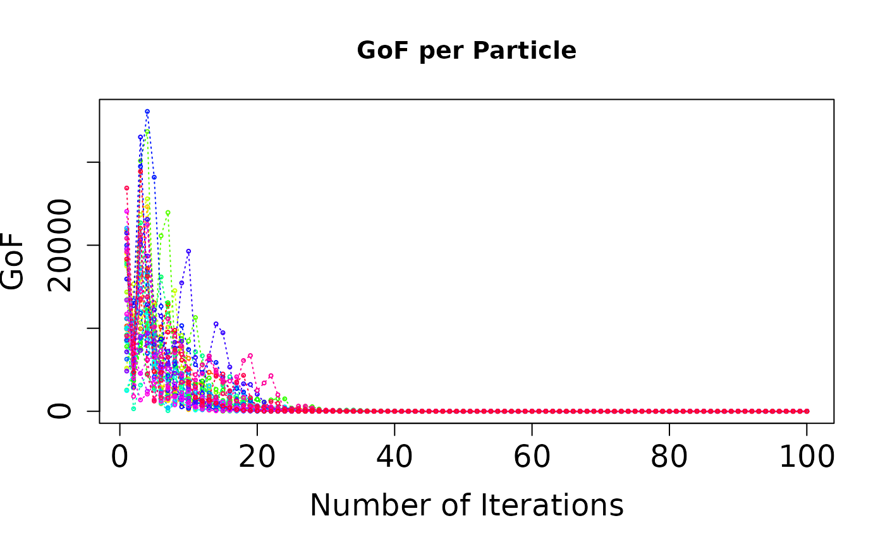
#>
#> [ Reading the file 'Particles_GofPerIter.txt' ... ]
#> [ Number of particles : 40 ]
#> [ Number of iterations: 100 ]
#> [ Plotting GoF for each particle vs Number of Model Evaluations' ... ]
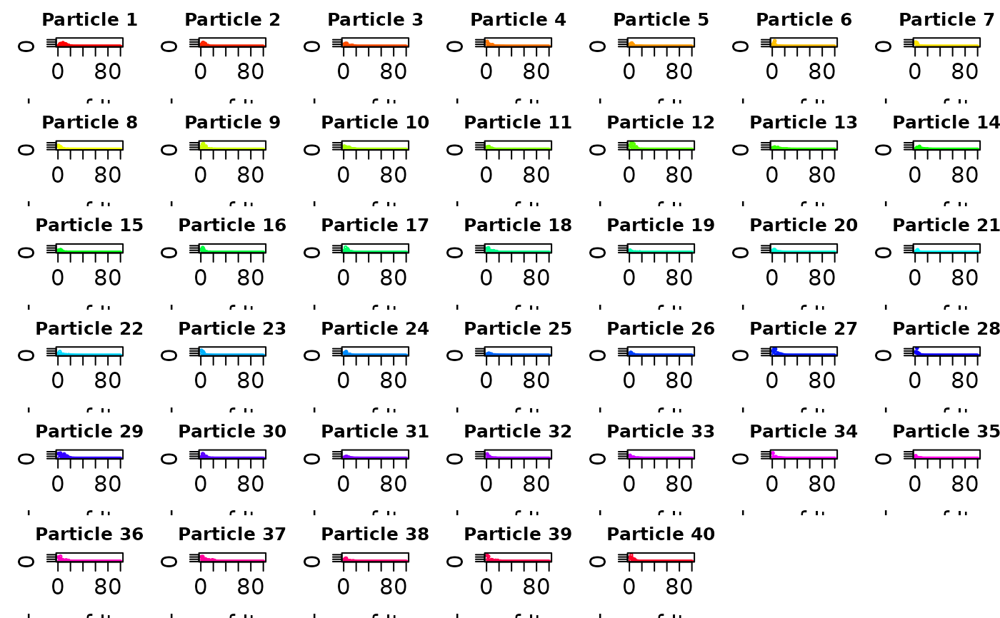
#>
#> [ Reading the file 'Particles_GofPerIter.txt' ... ]
#> [ Number of particles : 40 ]
#> [ Number of iterations: 100 ]
#> [ Plotting GoF for each particle vs Number of Model Evaluations into 'Particles_GofPerIter.png' ... ]
# } # donttest END